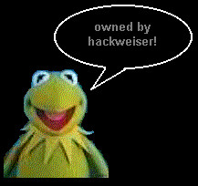

frogs > mooses
well, well, well. another site owned by the infamous leader of hackweiser, kermit the frog. kermit came back to inform you that global domination is still going on, so attempt to secure your boxes as we blaze through boxen worldwide !@#$%^&* h4r h4r h4r.
another update from the frog himself: bl4f (owned) - stop talking shit before kermit lays the fucking smack down, he's very angry and miss piggy is rather upset herself. you want to fucking step up? say it you elite front page media wh0res.
also, we'd like to nicely ask that neon lenz stop ./rds'ing sites. we're sick of him trying to be cool, plz stop before you make yourself look ridiculous (too late).
also, we're going to be around for a long time. so don't expect our world domination scheme (cleverly hatched by kermit the frog) to end anytime soon. we're coming for you next!
greets: the muppets, jim henson, b33rcan, bighawk, mat, beligerant, evilclone, gammbitr, hacker (mpaa - we support you), wax, dez, phel0n, axtrex, starman_jones, rsh, ch3wb4k4, dm3, fut0n, all of hackweiser, and irc.dugnet.net
owned by kermit the frog (our fearless leader) and generic of hackweiser